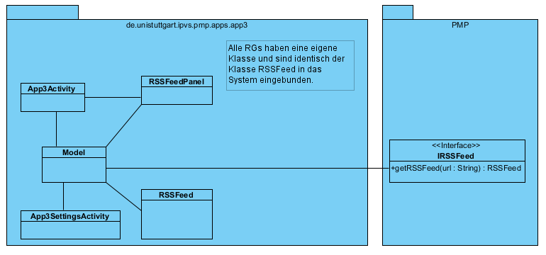

Versionshistorie
Version 3.1 (08.02.2012)
- Erstes Gerüst des Entwurfs
Version 3.2 (10.02.2012)
- Klassendiagramm hinzugefügt
Version 3.3 (15.02.2012)
- Verbesserungen nach der Begutachtung vorgenommen
Einleitung
Die entworfene Software dient als eine Beispielapp, die die Funktionen der PMP bezüglich des Umgangs mit vielen Ressourcen demonstriert.
Die Software ist reine Demonstrationsapp und soll keine ausgefallene Oberfläche besitzen, jedoch hässlich soll sie auch nicht werden. Dafür soll sie viele Ressourcengruppen gemeinsam mit der PMP verwenden.
In erster Linie soll die Funktionalität der Software sichergestellt werden, sodass die zusätzlichen Ressourcengruppen im Nachhinein hinzugefügt werden.
Entwurfsprinzipien
Die Software ist eine Informations-App. Somit wird diese hauptsächlich die Informationen aus dem Internet beziehen und diese dem Benutzer anzeigen. Die Hauptquelle werden die diversen RSS-Feeds sein. Der Benutzer wird in der Lage sein die Informationen der Info-App einstellen zu können, was er mit Hilfe von PMP erreichen können wird.
Architektur
Das System ist in die drei Komponenten UserInterface, ResourceGroups und PMP untergliedert. Der Zugriff auf die Komponenten erfolgt über die entsprechenden Klassen. Die von PMP zur Verfügung gestellten und mit der Info-App gemeinsam genutzten Ressourcen-Gruppen werden auch über die entsprechende Klassen gesteuert. Weitere Schnittstellen zwischen den Komponenten gibt es nicht.
Die folgende Abbildung zeigt die Komponenten im Überblick.

Komponenten
Die folgenden Abschnitte beschreiben die Komponenten der Anwendung, deren Schnittstellen, ihren Aufbau und ihre Funktion. Die Beschreibungen legen den Schwerpunkt auf die Erklärung der Konzepte und Ideen, die hinter den Komponenten und ihrer Funktionsweise stecken.
UserInterface
Die graphische Benutzungsschnittstelle besteht im Wesentlichen aus wenigen Activitys-Fenstern, die die gewünschten Informationen anbieten werden. Diese Activity-Fenster wird man durch einen Regler umschalten können. Auf die Funktionen der Schnittstelle wird über die entsprechende UI-Klasse zugegriffen.
ResourceGroups
Die Komponente ResourceGroups implementiert die Möglichkeiten die einzelnen Informationsbereiche individuell einstellen zu können. Dabei wird man unter anderem zu der PMP verlinkt und nimmt die Einstellungen von dieser App vor.
PMP
PMP ist eine Art externe Komponente, die der Info-App die Interfaces bereitstellt.
Klassendiagramm

Die Klasse Model steuert die Info-App. Die Klasse IAppActivity implementiert die Hauptactivity der Info-App. Diese ist nur eines der Informationspanels, die vom Benutzer als die Startactivity ausgesucht wird. Als Beispiel eines Informationpanels wurde im Diagramm das Panel RSSFeedPanel mit der zugehörigen RG RSSFeed gewählt. Das dazugehörige Interface IRSSFeed wird von der Ressourcen-Gruppe bereitgestellt. Auf dieselbe Art werden alle Ressourcen-Gruppen der Info-App im System eingebunden. Die letzte Klasse IAppSettingsActivity implementiert die Einstellungen der einzelnen Informationpanels.